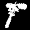

The sinister biotechnic Arachnons delight in the destruction of life. The starting Arachnon fleet is slow but powerful, and better at exterminating populations than capturing them.
 When the Arachnons win a battle, they immediately get Scuttlers on the world, equal to 10% of the Population destroyed in the battle. Smaller numbers of Scuttlers will appear on following turns - about half as many each turn as the turn before, until it drops below 1.
When the Arachnons win a battle, they immediately get Scuttlers on the world, equal to 10% of the Population destroyed in the battle. Smaller numbers of Scuttlers will appear on following turns - about half as many each turn as the turn before, until it drops below 1.
Furthermore, the life force consumed by the victorious Arachnon warriors energizes the homeworld brood-vats . . . for every 5 enemy Population destroyed in victorious battle, one bonus Population appears on the Arachnon homeworld on the next turn.
The Arachnons can be strong on defense as well as attack. The high Population Damage ratings of their starting OSAA2 Incinerators and All-Terrain Rovers are no drawback when they are defending a world, and both units are relatively cheap. Furthermore, Arachnons start with the EDM Sensor-200, making them hard to surprise, especially if they build more for their colony worlds.
START CONDITIONS
EI: 50, RER: 240BASE FLEET
| 600 | Population | |
| 400 | Ultranium | |
| 2 | ATO-3 Crawler | |
| 35 | All-Terrain Rover | |
| 1 | C.R. Org II | |
| 1 | EDM Sensor-200 | |
|  | 7 | OSAA2 Incinerator |
| 0 | TK Helmet (License only) |